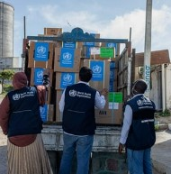
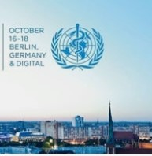
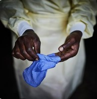
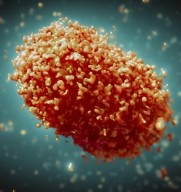
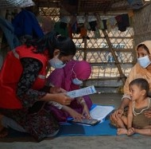
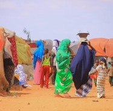
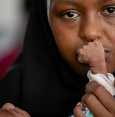
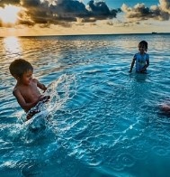

 WHO responds to The Lancet COVID-19 Commission
 World Health Summit 2022: Press accreditation now open
 WHO makes new recommendations for Ebola treatments, calls for improved access
 Monkeypox: experts give virus variants new names
 Interim statement on COVID-19 vaccination for children
 WHO launches appeal to respond to urgent health needs in the greater Horn of Africa
 Joint statement by UNICEF Executive Director Catherine Russell and WHO Director-General Dr Tedros Adhanom Ghebreyesus on the occasion of World Breastfeeding Week
WHO recommends long-acting cabotegravir for HIV prevention
WHO applauds agreement to scale-up generic manufacturing for access to long-acting injectable antiretrovirals
 WHO calls on global community to “do one thing” to save lives on World Drowning Prevention Day